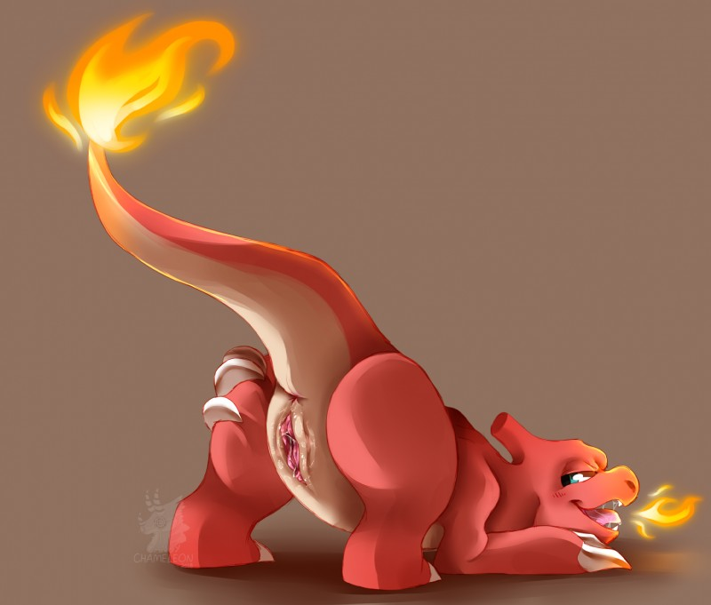
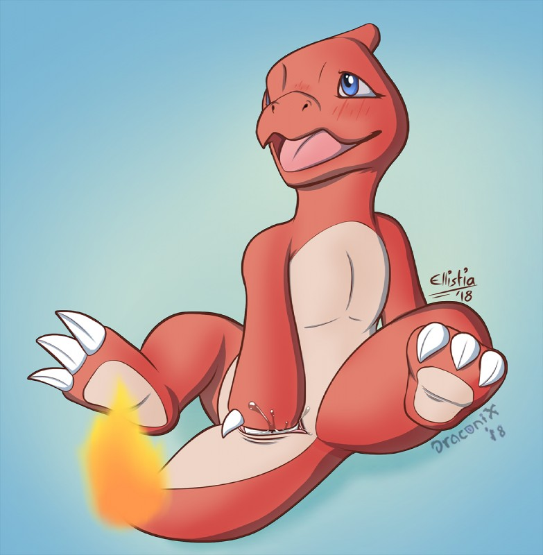
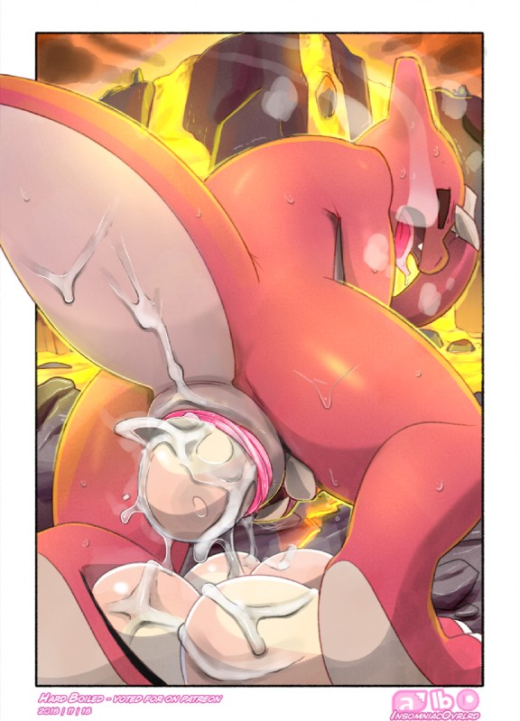

Charmeleon - #005
Charmeleon, like it's pre-evolution, denotes it's liking for a mate by the heat and glow from it's tail. Though differing from it's pre-evolution, it is much more assertive. Upon locating a mate it deems suitable, it'll approach and advance on them and more often then not either be a bit forceful or show off. During the mating process they will pin their mate. Charmeleon starts off with a bit of prodding before ramming itself into the mate, giving them a long and rough pounding. As the process comes to an end and Charmeleon releases its seed, its tail will let out a large burst of fire that more often then not incinerates the area around it. The Charmeleon will sleep with its mate until it wakes up where it'll indulge in its mate some more to make sure it fills them with plenty of seed for impregnation.
Desc written by "V-sama#3552"
| dex number: | 005 |
| e621 popularity: | 1504 | dom/sub: | mostly dom |
| size: | 3-4 |
|  |  |  | |
|---|---|---|---|
| blitzdrachin | candychameleon | ellistia & itsdraconix | insomniacovrlrd |
Charmeleon e621